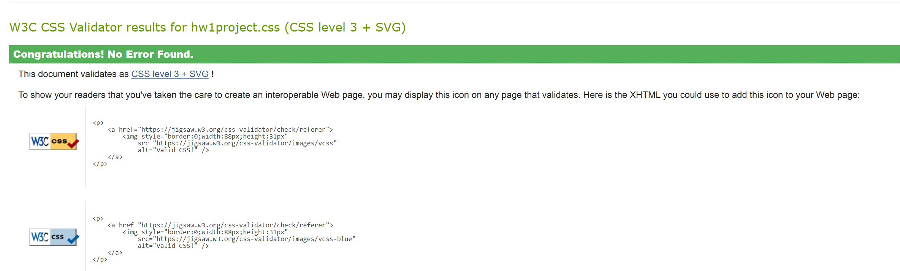
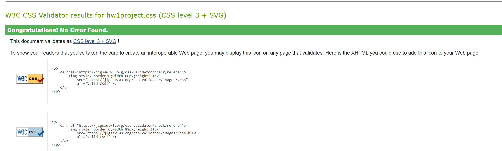

| Work Name | Occupation | Start Date | End Date |
|---|---|---|---|
| Aldi | Cashier | 12/1/2020 | 9/14/2022 |
| UBreakIFix by Asurion | Repair Technician | 10/15/2023 | 8/10/2024 |
| Repligen | Manufacturer Associate | 2/10/2025 | present |
I effectively communicated with fellow employees and customers; cleaned the entire store every closing shift; used quick mental math to serve customers when working at the register; organized products on shelves and in the back room exactly as instructed; worked efficiently to ring up customers to avoid wait times and to increase customer satisfaction
I worked on fixing cell phones, had to be extremely precise and use a lot of problem solving skills with repairs; helped people at the front of the store, paying attention to the details each customer would give in regards to their device and taking precise notes to make future communication with other coworkers easier, also had to be patient and understanding of each person’s unique situation to get them the best help possible while reassuring them we would do our best to fix their device; required great communication skills to communicate with other coworkers and customers
I survey certain machines that create material used in machines assembled in other departments; maintaining a clean work enviornment, recording data every few hours; have to know how to gown properly to work in the cleanroom and knowing the processes to get the product ready for future uses
 
